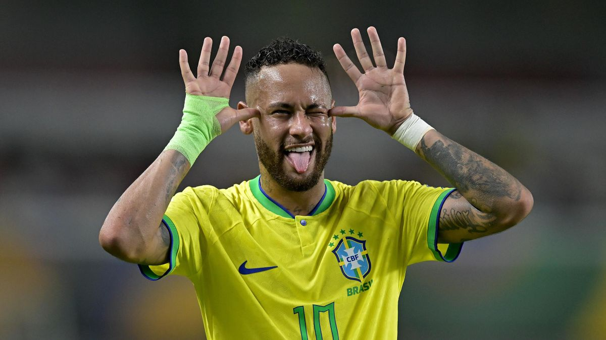

Neymar JR

Neymar da Silva Santos Júnior (born 5 February 1992), known as Neymar Júnior or mononymously as Neymar, is a Brazilian professional footballer who plays as a forward for Saudi Pro League club Al Hilal and the Brazil national team. Widely regarded as one of the greatest players of his generation, he is renowned for his flamboyant style of play, passing abilities and two-footedness. He finished third for the FIFA Ballon d'Or in 2015 and 2017 and is a recipient of the FIFA Puskás Award. Neymar has scored at least 100 goals for three different clubs, making him one of the few players to achieve this feat.
Neymar came into prominence at Santos, where he made his professional debut aged 17. Soon becoming the Brazilian league's star player, he helped Santos win their first Copa Libertadores in nearly 50 years. In 2013, he relocated to Europe to join Barcelona where he became part of Barcelona's attacking trio with Lionel Messi and Luis Suárez, dubbed MSN. Winning the continental treble of La Liga, the Copa del Rey, and the UEFA Champions League in the trio's first season together, Neymar was the tied top scorer of the Champions League campaign, as well as the top scorer in the Copa del Rey.
Career
- 2009–2013 Santos
- 2013–2017 FC Barcelona
- 2017-2023 Paris Saint Germain
- 2023-Present Al Hilal
Major trophies
- 1 Champions league 2015
- 1 Olympic medal 2016
- 6 Ligue 1 2017-2018-2019-2020-2022-2023
- 1 Club World cup 2015